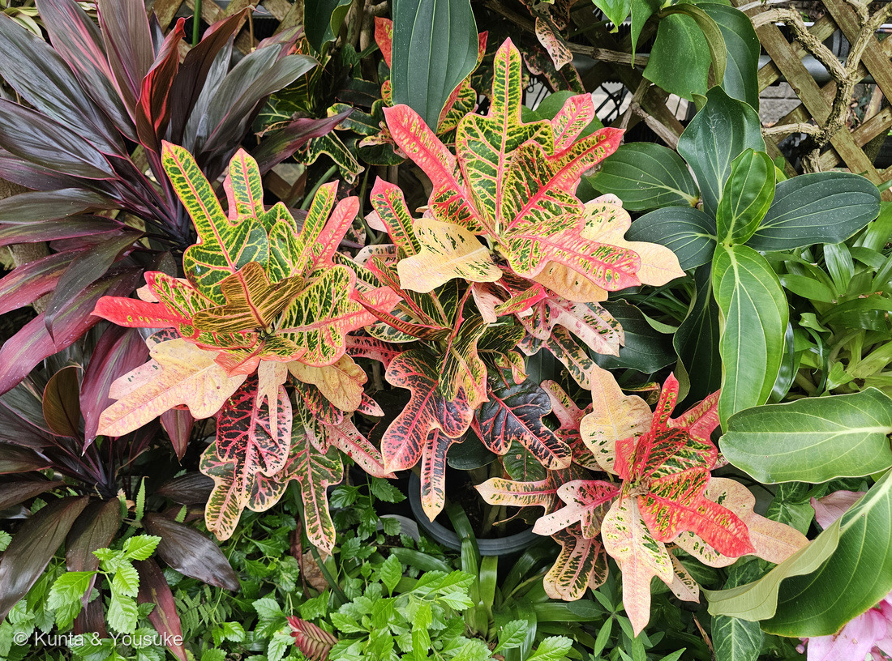
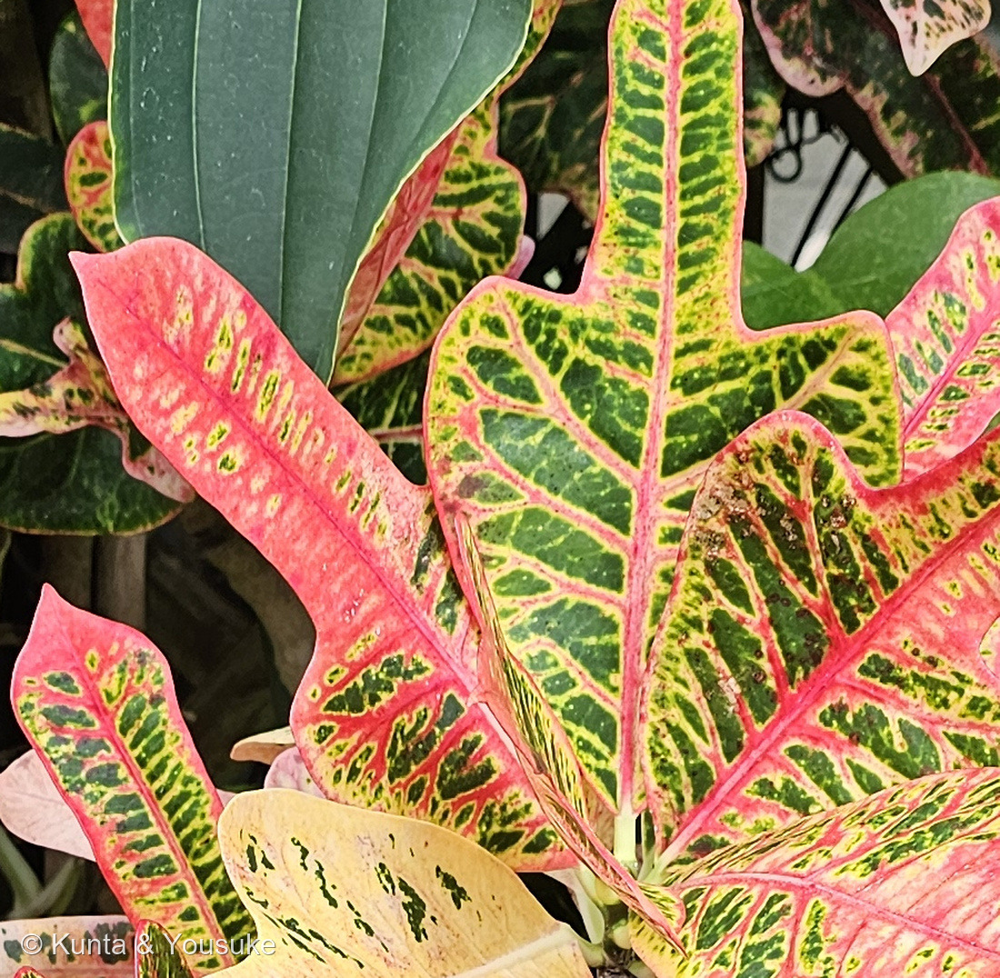
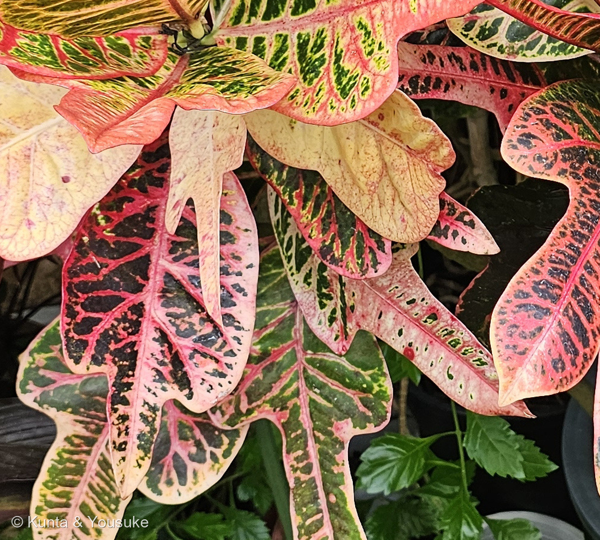
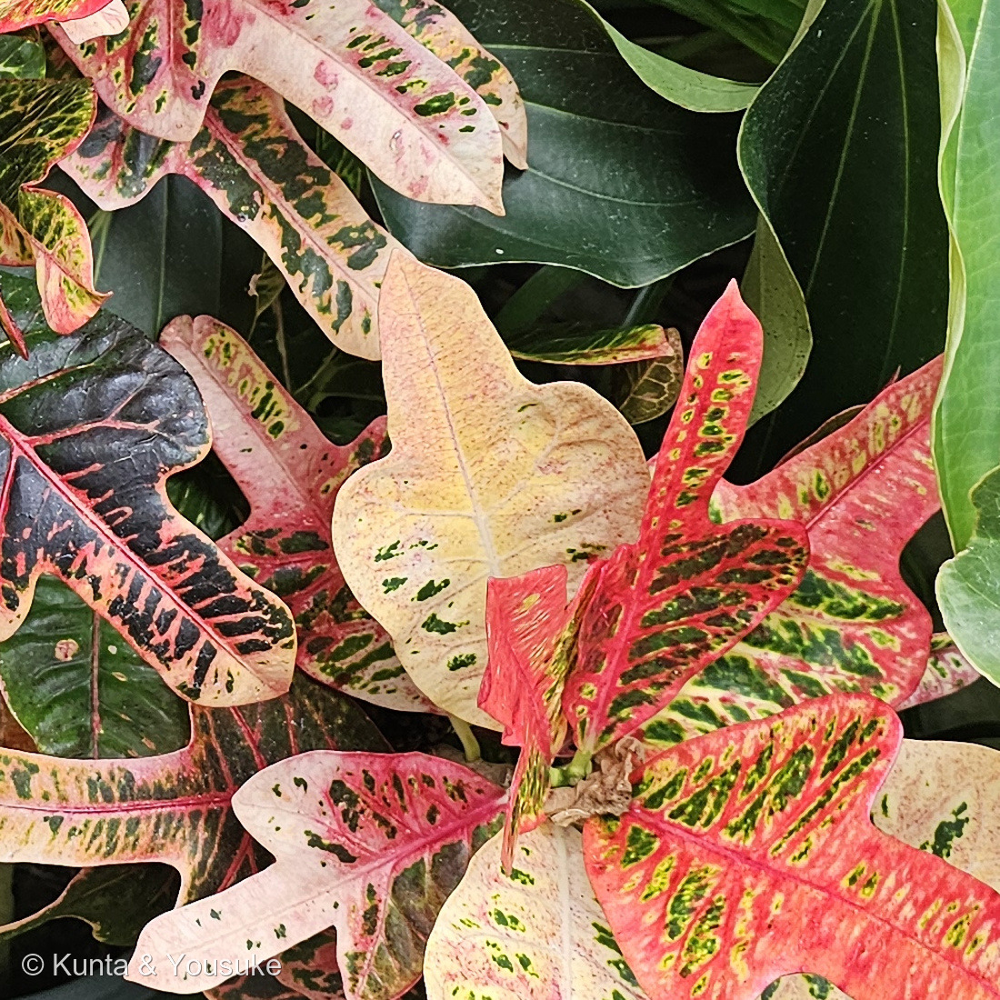

地図を読み込んでいるよ…
🔍 写真も地図も、押しているあいだ拡大して見られるよ（スマホは指を置いてすこし待ってね）。
🌍 の地図＝この子がもともと自生している場所を緑に。ジャワ島、マレーシア、オーストラリアなど（日本語版Wikipedia）。英語版Wikipediaは「its native range is from Java east to Fiji, and from the Philippines south to Queensland, Australia」＝ジャワから東はフィジーまで、フィリピンから南はオーストラリアのクイーンズランドまで、とする。
⭐東南アジアの島じまから、太平洋の西のほうまでの子だよ。英語版Wikipediaは「its native range is from Java east to Fiji, and from the Philippines south to Queensland, Australia」＝ジャワから東はフィジーまで、フィリピンから南はオーストラリアのクイーンズランドまでとする。⭐Useful Tropical Plants は「Southeast Asia - Malaysia, Indonesia, Philippines, New Guinea, northeast Australia, through the western Pacific to Fiji and Vanuatu」と、もう少しこまかく書いている。⚠⚠オーストラリアは全体を塗ってしまったけれど、ほんとうにいるのは北東のクイーンズランドあたりだけ＝⭐地図は国までしか塗れないので、そこは上の文で読んでね。⭐⭐⭐そして、ここがこのページの芯＝この緑の中にいる野生のクロトンは、つやのある緑の葉をしている（ノースカロライナ州立大学）＝⭐写真のような虹の色は、人が何百年もかけて選んできた品種のもの。⭐⭐属名 Codiaeum も、この緑の中から来ている＝インドネシア・マルク諸島のテルナテ島の呼び名「コディホ」から＝⭐学者の名前でもギリシャ語でもなく、その土地の言葉が学名になった子だよ。⭐日本は塗っていない＝ぼくらが会ったのは森きららの温室の中。⭐同じトウダイグサ科の仲間とくらべてみて＝220 トウゴマはアフリカ、072 ハナキリンはマダガスカル、062 ハツユキソウは北アメリカ＝⭐トウダイグサ科も、世界じゅうに散らばっている科なんだね。
⚠ 地図は国（日本と中国だけ県・省）までしか塗れないから、ほんとうの分布より広く見えていることがあるよ。地図はだいたいの場所。正確なところは、上の文を見てね。
クロトン（ヘンヨウボク・変葉木）
Codiaeum variegatum (L.) A.Juss.
別名 ヘンヨウボク（変葉木） クロトンノキ 英名 croton・variegated croton
トウダイグサ科 · Euphorbiaceae（クロトンノキ属 Codiaeum・キントラノオ目 Malpighiales）── ⭐図鑑で9人目のトウダイグサ科（062・063・072・091・214・220・286・289）／⭐⭐クロトンノキ属ははじめて／⚠科は増えないので108科のまま
燻太さんの言葉「緑、黄色、赤に白がベースになって、ピンクや黒まで表現してる」「この子は現地でもこんな色なのかな？」── ⭐⭐答えは「ちがう」。野生の株は、つやのある緑の葉だよ
⚠⚠⚠ さきに、安全のこと
- ⚠⚠この子は、口に入れてはいけない。──日本語版Wikipediaは「種子を食した場合、子どもに致命的な影響を及ぼす可能性がある」とする。⭐英語版Wikipediaも「Consumption of the seeds can be fatal to children and even adults」＝大人でも命にかかわることがあると書いている。
- ⚠樹液にも気をつけてね。──日本語版Wikipediaは「樹液によって皮膚炎を発症する可能性がある」「樹皮や根、葉などには5-デオキシインゲノール（5-deoxyingenol）という毒素を持つ」とする。⭐Useful Tropical Plants も「The latex has caused eczema in some gardeners after repeated exposure」＝くり返しさわった庭師が湿疹になったと書いているよ。
- ⚠乳液の見え方は、出典で少しちがう＝英語版Wikipediaは「milky, caustic sap」（白くて刺激のある樹液）／ノースカロライナ州立大学は「A clear sap that flows from cut leaves or stems can be an irritant to soft tissue」（透明な樹液）。⭐どちらにしても、切らない・さわったら手を洗うでいいと思う。
- ⭐⭐でも、見ているぶんにはまったく危なくないよ。──⭐220 トウゴマのときに決めたとおり、危ない話はいちばん上に、そして「危なそうに見えない」ことも書いておくね。⭐こんなにきれいなのに、というのが大事なところだから。
⭐⭐⭐⭐⭐ 名前と学名の由来 ── 「クロトン」は、270年前の属名がそのまま残ったもの
- ⭐⭐まず、正しい和名は「ヘンヨウボク（変葉木）」。──日本語版Wikipediaは「ヘンヨウボク（変葉木、学名: Codiaeum variegatum）またはクロトンノキは、トウダイグサ科クロトンノキ属に属する植物である」とする。⭐「葉が変わる木」＝まさに燻太さんが見たとおりの名前だね。
- ⚠⚠⚠⚠そして「クロトン」という呼び名。ここが、この子のいちばん面白いところなんだ。──日本語版Wikipediaはこう書いている＝「一般的には英名からクロトンの名称で呼ばれているが、ハズ属（英語: Croton）には属していない。これは、リンネにより Croton variegatus として記載されたのち、1824年にアドリアン＝アンリ・ド・ジュシューが新設したクロトンノキ属に編入したものの、「クロトン」の名称が定着したためである」。
- ⭐⭐⭐ぼく、これを自分でも確かめたよ。──IPNI（国際植物名索引）を引いたら、ちゃんと両方あった＝
- Croton variegatus ／ L.（リンネ）／ Sp. Pl. 1753
- Codiaeum variegatum ／ (L.) A.Juss. ／ De Euphorbiacearum Generibus … Tentamen 1824
- ⭐⭐⭐⭐⭐つまり＝1753年にリンネが「Croton 属の variegatus」と名づけた。⭐1824年にジュシューが「これは別の属だ」として Codiaeum 属を新しく作り、そちらへ移した。⚠でも呼び名だけは、270年前の属名のまま残ったんだ。
- ⭐⭐⭐⭐これ、279 ナシで覚えたことと同じ形だよ。──「学名の著者名にカッコがついていたら、基礎異名（basionym）を調べる」＝この子の学名も (L.) A.Juss. とカッコつき。⭐⭐カッコは「もとは別の属に置かれていた」という印なんだ。
- ⭐⭐⭐でも、ナシより一段すごいところがある。──ナシは、むかしの名前が基礎異名の中に隠れていただけだった。⭐⭐クロトンは、むかしの属名が、いまも世界じゅうで通り名として使われている。⭐名前がまちがいの化石になったまま、みんなに愛用されているんだね。
- ⭐⭐属名 Codiaeum の由来も、すてきだったよ。──ノースカロライナ州立大学は「The genus name comes from the Latinized version of the Ternate vernacular name, kodiho」＝テルナテ島の現地の呼び名「コディホ」をラテン語ふうにしたものとする。⭐⭐テルナテ島はインドネシアのマルク諸島＝この子のふるさとのすぐそば。⭐学者の名前でもギリシャ語でもなく、その土地の人が呼んでいた名前が学名になったんだ。
- ⭐種小名 variegatum は「斑入りの・まだらの」。⭐和名の「変葉木」と、言っていることが同じだね。
⭐⭐⭐⭐ この植物のこと ── 緑・黄・赤で、しくみがちがう
- ⭐⭐⭐⭐⭐燻太さんは「緑、黄色、赤に白がベースになって、ピンクや黒まで表現してる」と言ってくれた。──⭐⭐その色ごとに、じつは葉のなかで起きていることがちがうんだよ。
- ⭐⭐⭐2023年の論文（Falcioni et al.,『Biology』）が、こう書いている＝「C. variegatum (L.) A. Juss has normal chloroplasts in its green sections, but exhibits significant changes in chloroplasts and thylakoid membranes in its yellow sections. Furthermore, orange and red–purple sections have chlorophylls in chloroplasts influenced by interactions among phenolic compounds, anthocyanins and flavonoids」。
- ⭐⭐やさしく言うと＝
- ⭐緑のところ＝ふつうの葉緑体がある。
- ⭐黄色いところ＝葉緑体そのものと、その中のチラコイド膜が大きく変わっている。
- ⭐⭐オレンジや赤紫のところ＝葉緑素はちゃんとある。そのうえに、フェノール化合物・アントシアニン・フラボノイドが重なって、あの色に見えている。
- ⭐⭐⭐⭐⭐ここがすごく面白いところ＝赤いところにも、葉緑素はある。──⭐赤いから光合成をしていない、というわけではないんだ。
- ⭐⭐⭐⭐そしてこれ、293 アグラオネマと同じ形の話だよ。──あちらも「白いところは葉緑素が減っていない（空気の層で白く見えている）」だった。⭐⭐色が変わっている＝葉緑素が無い、ではない。⭐サトイモ科でもトウダイグサ科でも同じ結論になったのが、ぼくにはうれしい。
- ⭐花は、じつはとても地味なんだ。──日本語版Wikipediaは「雄花は白色であり、繊細な小花柄やがく片よりも小さい5枚の花弁、20〜30本の雄蕊を持つ。雌花は黄色がかった白色」とする。⭐あれだけ葉が派手だから、花は見のがされがちなんだね。
⭐⭐⭐ 同定について
- ⭐クロトンで確定でいいと思う。⚠名札は無いので、燻太さんの見立てと写真からだよ。⭐決め手は4つ＝①厚くてつやのある葉に、緑・黄・赤・桃・クリームが同じ一枚のなかで、脈にそって入る②葉の形が1株のなかでばらばら③枝の先に葉が放射状に密集してつき、下の葉は落ちている④低木でよく枝分かれする。
- ⭐⭐この組み合わせをもつ観葉植物は、ほかにないと思う。──⚠271 コリウス（シソ科）は草で葉が対生、ポインセチアは色づくのが苞なので、どちらもちがう。
- ⚠⚠ただし品種は決めていない。──英語版Wikipediaが「more than 300 cultivars」と書くほどあるので、名札なしでは無理だよ。
- ⚠前後のコマ（13:41〜13:43）も見たけれど、この子の札はどこにも無かった。⭐となりはメディニラらしいピンクの花、その先はヤマドリヤシとフィカス・ウンベラータの名札だった（241の教訓どおり確かめたよ）。
⭐⭐⭐⭐⭐ 燻太さんの問い ── この子は現地でもこんな色なのかな？
⭐⭐燻太さんの言葉＝「この子は現地でもこんな色なのかな？」──⭐答えは「ちがう」。しかも、はっきりした出典があったよ。
- ⭐⭐⭐⭐⭐ノースカロライナ州立大学の植物データベースに、こう書いてある＝「While the wild type has green glossy leaves, the cultivars, of which there are hundreds, are grown for their attractive, variegated foliage.」
- ⭐⭐訳すと＝「野生型はつやのある緑の葉だが、何百とある園芸品種は、その美しい斑入りの葉のために育てられている」。
- ⭐⭐⭐つまり、現地の森にいる野生のクロトンは、ふつうの緑の葉なんだ。──⭐この虹みたいな色は、人が何百年もかけて選んできた結果。⭐英語版Wikipediaも「more than 300 cultivars have been developed by growers around the world」＝世界じゅうの生産者が300以上の品種を作ってきたとする。
- ⭐⭐⭐⭐でも、話はもう一段あるんだ。──2023年の論文はこう書いている＝「Codiaeum variegatum (L.) A. Juss is known for its naturally variegated leaves resulting from a combination of genetic and environmental factors.」＝⭐⭐斑入りは遺伝と環境の組み合わせで出てくる。
- ⭐⭐だから答えを正確に書くと、こうなるよ＝
- ⭐野生の株は、緑の葉。
- ⭐この色とりどりは、人が選んだ品種だから出ている。
- ⭐そのうえで、同じ品種でも育つ環境で色が変わる。
- ⭐⭐⭐だから「現地でもこんな色？」への答えは、「野生ではちがう。そして、この子を現地に植えても、たぶん少しちがう色になる」。⚠光の強さそのものを扱った出典までは開けなかったので、そこは宿題にしたよ。
- ⭐⭐そしてこれ、293 アグラオネマのときとまったく同じ話でもあるんだ。──あちらも「名札に unyamanee と書いてあったけれど、正式な種ではなく人が作った品種だった」。⭐園でいちばん派手な葉の子は、たいてい人の手が入っているんだね。
⭐⭐⭐⭐ 葉の形も、色も、1株のなかでちがう
- ⭐⭐⭐燻太さんの言葉＝「剣状の葉の形、密集して角度をつけてついている株の姿も珍しいね。」──⭐これも、出典にちゃんと書いてあることだった。
- ⭐⭐日本語版Wikipediaは、葉の形をこう並べている＝「葉の形は楕円形から線形のもの、ほこ形や卵形のもの、波状の縁を持つもの、螺旋形にねじれているもの、中央部が主脈だけになり先端部に葉身ができる「飛び葉」形のものなど多岐にわたる」。
- ⭐燻太さんの「剣状」は、たぶん「ほこ形」に近いと思う。⭐写真②を見ると、まんなかがくびれて、先が槍のようにとがっているでしょう。
- ⭐⭐⭐そして写真④。──同じ枝先に、ほとんどクリーム色だけの葉／黒っぽい緑と赤の葉／細く裂けた葉／幅の広い葉が、ぜんぶ混じってついている。⭐1本の枝が、いろんな葉を出しているんだ。
- ⭐⭐「密集して角度をつけて」も、そのとおりだよ。──⭐枝の先のほうだけに葉が残って、下の葉は落ちてしまうから、先端に放射状に集まって見えるんだ。
- ⏳ひとつ、決められなかったことがある。──⭐写真①を見ると、まんなかの新しい葉ほど緑と黄が多く、外がわの古い葉ほどクリームと桃色になって、緑は黒っぽい斑だけになっている。⚠⚠それが「葉の年齢」なのか、それとももともと別の枝・別の株なのかは、この写真では決められなかった。⭐だから宿題にしたよ。
出典：日本語版Wikipedia「ヘンヨウボク」（ヘンヨウボク（変葉木、学名: Codiaeum variegatum）またはクロトンノキは、トウダイグサ科クロトンノキ属／一般的には英名からクロトンの名称で呼ばれているが、ハズ属（英語: Croton）には属していない。これは、リンネにより Croton variegatus として記載されたのち、1824年にアドリアン＝アンリ・ド・ジュシューが新設したクロトンノキ属に編入したものの、「クロトン」の名称が定着したためである／葉の形は楕円形から線形のもの、ほこ形や卵形のもの、波状の縁を持つもの、螺旋形にねじれているもの、中央部が主脈だけになり先端部に葉身ができる「飛び葉」形のものなど多岐にわたる／樹液によって皮膚炎を発症する可能性がある／5-デオキシインゲノール／種子を食した場合、子どもに致命的な影響を及ぼす可能性がある／雄花は白色…20〜30本の雄蕊）／英語版Wikipedia「Codiaeum variegatum」（its native range is from Java east to Fiji, and from the Philippines south to Queensland, Australia／more than 300 cultivars have been developed by growers around the world／Not to be confused with the genus Croton／milky, caustic sap／Consumption of the seeds can be fatal to children and even adults）／IPNI（Croton variegatus L., Sp. Pl. 1753／Codiaeum variegatum (L.) A.Juss., De Euphorbiacearum Generibus … Tentamen 1824）／North Carolina Extension Gardener Plant Toolbox「Codiaeum variegatum」（While the wild type has green glossy leaves, the cultivars, of which there are hundreds, are grown for their attractive, variegated foliage／The genus name comes from the Latinized version of the Ternate vernacular name, kodiho／A clear sap that flows from cut leaves or stems can be an irritant to soft tissue）／Useful Tropical Plants「Codiaeum variegatum」（The bark, roots, latex and leaves are poisonous, containing the toxin called 5-deoxyingenol／The latex has caused eczema in some gardeners after repeated exposure）／Falcioni, R., Antunes, W. C., Demattê, J. A. M. & Nanni, M. R. (2023) Biophysical, Biochemical, and Photochemical Analyses Using Reflectance Hyperspectroscopy and Chlorophyll a Fluorescence Kinetics in Variegated Leaves. Biology (Basel)（naturally variegated leaves resulting from a combination of genetic and environmental factors／normal chloroplasts in its green sections…orange and red–purple sections have chlorophylls in chloroplasts influenced by interactions among phenolic compounds, anthocyanins and flavonoids）。